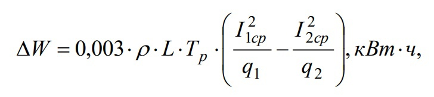

Что такое Энергосбережение?
Энергосбережение - комплекс мер по реализации правовых, организационных, научных,
производственных, технических и экономических мер, направленных на эффективное (рациональное)
использование (и экономное расходование) топливно-энергетических ресурсов и на вовлечение в
хозяйственный оборот возобновляемых источников энергии (ГОСТ Р 51387-99 «Энергосбережение»).
В настоящее время энергосберегающие технологии являются одним из ключевых направлений
развития энергетической политики России. Так как экономика страны характеризуется высокой
энергоёмкостью, необходимыми мерами по обеспечению экономии энергии являются:
- ликвидация технологической отсталости промышленности,
- оснащение предприятий новым энергосберегающим оборудованием,
- модернизация сферы ЖКХ,
- внедрение энергосберегающих технологий,
- привлечение в энергосбережение должного объема инвестиций,
- работа с населением,
- борьба с бесхозяйственностью в использовании энергетических ресурсов.
Энергосберегающие технологии
Ещё одним направлением, призванным в будущем заменить традиционные виды топлива, является
переход на энергосберегающие технологии в рамках использования возобновляемых источников энергии, к
которым относятся: твердая биомасса и животные продукты, промышленные отходы, гидроэнергия,
геотермальная энергия, солнечная энергия, энергия ветра, энергия приливов морских волн и океана. Это
даёт не только значительное уменьшение расходов на энергетические затраты, но и имеет большие
экологические плюсы.
На современном этапе можно выделить три основных направления энергосбережения:
- полезное использование (утилизация) энергетических потерь;
- модернизация оборудования с целью уменьшения потерь энергии;
- интенсивное энергосбережение.
Цели и задачи энергосбережения
Основной целью энергосбережения является повышение энергоэффективности всех отраслей, во всех
пунктах населения, а также в стране в целом
В созданной Правительством РФ законодательной базе определены приоритетные задачи развития
энергосберегающих технологий:
- Снижение энергопотребления в сопоставимых условиях не менее чем на 3% в год в течение пяти лет
(начиная с 2010 года);
- Создание новой идеологии государственных закупок, включающей в себя замену освещения на
энергосберегающие лампы и осветительные приборы, введение права устанавливать минимальные
требования по энергоэффективности при закупке товаров для нужд государства;
- Введение требований для производителей и импортеров товаров по обязательной маркировке
продукции по классам энергоэффективности;
- Изменение тарифной политики путем применения долгосрочных методов тарифного регулирования;
- Введение требований к организациям коммунального комплекса, обязывающих учитывать при
формировании инвестиционных программ мероприятия по энергосбережению и повышению
энергоэффективности.
Экономия электроэнергии в системах электроснабжения может быть получена при переводе внешних и внутренних электрических сетей на повышенное напряжение и определена по выражению:
где L- длина участка сети, на котором производится повышение
номинального напряжения, м,I(1);I(2)- среднее значение токов в
каждом проводе сети соответственно при низшем и высшем
напряжении, А; p--удельное сопротивление материала провода при 20 градусах
для алюминия: p(а)=0,026 Ом*мм/м
для меди: p(а)=0,0175 Ом*мм/м
для стали: p(а)=0,1 Ом*мм/м
q1 и q2- сечение проводов сети при низшем и высшем напряжении, мм2
(при проведении мероприятий без замены проводов q1=q2); Тр- число
часов работы линии за расчетный период времени, час.
Ответ: